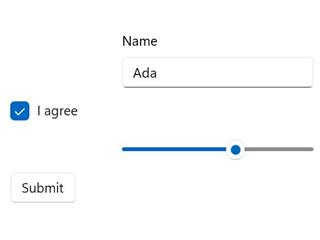
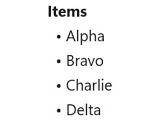
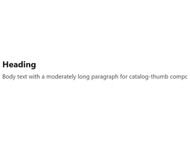
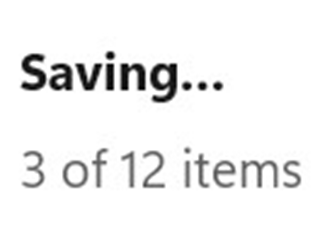
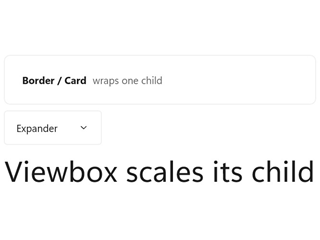
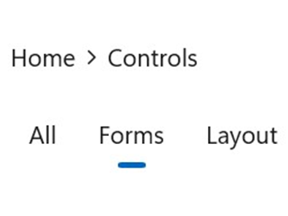
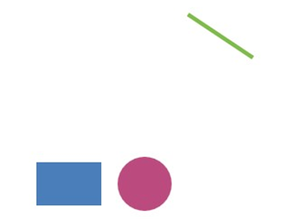
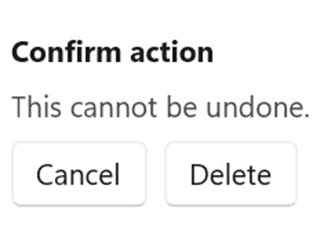
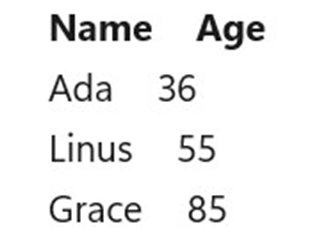
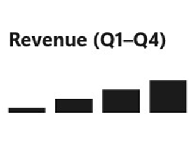

Controls¶
class ControlsCatalogApp : Component
{
public override Element Render() => VStack(8,
TextBlock("Controls catalog").FontSize(20).Bold(),
TextBlock("Every Reactor control, grouped by category.").Opacity(0.7),
Button("Open Forms", () => { })
).Padding(16);
}
Every visible thing on screen is a control. In Microsoft.UI.Reactor (Reactor) a control is the
return value of a factory like TextBlock(...) or Button(...) — a
plain element you compose, chain modifiers onto, and return from
Render(). The ten categories below cover the full set Reactor
exposes today. Pick a category, open its detail page, and you'll find
the factory signature, modifier matrix, and screenshots for every
control inside it.
Two ground rules apply across the catalog:
- Every control has a Reactor factory. No XAML in
Render()— the factories onMicrosoft.UI.Reactor.Factoriesare the only thing you need to compose UI. - WinUI-wrapper controls link out, not duplicate. When a control
(like
DatePickerorAutoSuggestBox) is a transparent WinUI wrapper, the Reactor page covers the factory and modifier surface and links to the Microsoft Learn design page for theming, layout guidance, and accessibility behavior. Reactor-original controls (DataGrid,Markdown,VirtualList,FlexPanel) are documented exhaustively in their own pages.
What "every control" means here, precisely. The tables below are the
mountable control catalog: every element type registered with the
ControlRegistry by
ReactorApp.RegisterAllBuiltIns(),
minus nine framework elements that are plumbing rather than something you
pick off a shelf. CommandHost and NavigationHost are wiring emitted by
commanding and navigation; FormField,
ValidationRule, and ValidationVisualizer are the
forms validation decorators; Semantic is the
accessibility annotation wrapper; XamlHost and
XamlPage are the XAML interop hosts; and
AnnounceRegion is internal — it exists only to back the
UseAnnounce hook and has no public factory. A unit
test (ControlCatalogCompletenessTests) fails the build when a newly
registered control is missing from this page, so the claim above is
checked rather than asserted.
Categories¶
| Category | What's in it | Detail page |
|---|---|---|
| Forms | Text input, picker, button, validation primitives | Forms |
| Collections | List, grid, virtualized list, repeater | Collections |
| Text & Media | Heading, rich text, image, media player | Text & Media |
| Status & Info | Progress, info bar, badge, teaching tip | Status & Info |
| Layout & Containers | Stacks, grids, borders, scroll hosts, panes | Layout |
| Navigation | Nav view, frame, tabs, breadcrumb, pivot | Navigation |
| Shapes & Icons | Rectangle, ellipse, line, path, icon sources | Styling |
| Dialogs & Flyouts | Content dialog, menu flyout, command bar flyout | Dialogs & Flyouts |
| Data System | DataGrid, columns, data sources, paging | Data System |
| Charting | Line, bar, area, pie, force graph | Charting |
Forms¶
Text input, choice, sliders, buttons, and the validation pipeline.
Forms is the category most apps spend time in; the detail page
(forms.md) covers controlled-input patterns and the
FormField validation surface.
class FormsGroup : Component
{
public override Element Render()
{
var (name, setName) = UseState("Ada");
var (agree, setAgree) = UseState(true);
var (volume, setVolume) = UseState(60.0);
return VStack(8,
TextBox(name, setName, placeholderText: "Name", header: "Name").Width(200),
CheckBox(agree, setAgree, label: "I agree"),
Slider(volume, 0, 100, setVolume).Width(200),
Button("Submit", () => { })
).Padding(16);
}
}

| Control | Description |
|---|---|
TextBox |
Single-line text input with placeholder + header. |
PasswordBox |
Obscured text input. |
NumberBox |
Numeric input with up/down spinner. |
AutoSuggestBox |
Text input with a filtered suggestion list. |
CheckBox / ThreeStateCheckBox |
Two- or three-state checkbox with optional label. |
ToggleSwitch |
Two-state switch with optional header. |
Slider |
Min/max-bounded numeric value. |
ComboBox |
Drop-down list of strings. |
RadioButtons |
Single-select radio group. |
RadioButton |
A single radio, for hand-built groups. |
DatePicker |
Inline three-spinner date picker (non-null). |
CalendarDatePicker |
Compact button that opens a popup calendar (nullable). |
CalendarView |
Full month grid with single / multiple / range selection. |
TimePicker |
Hour / minute / period spinner. |
ColorPicker |
Continuous color selection with spectrum and hex input. |
Button |
Click handler with label. |
RepeatButton |
Fires repeatedly while held. |
ToggleButton / ThreeStateToggleButton |
Button that latches a state. |
HyperlinkButton |
Link-styled button with a navigate target. |
DropDownButton |
Button that opens an attached flyout. |
SplitButton / ToggleSplitButton |
Primary action plus a drop-down half. |
WinUI design page: Buttons, Text controls.
Collections¶
Bound-list rendering and virtualization. Use ListView when the data
fits in memory and the row template is uniform, VirtualList when the
list is large enough that mounting all rows would hurt frame time, and
LazyVStack when the layout must be a stack but mounting cost is the
bottleneck.
class CollectionsGroup : Component
{
public override Element Render()
{
var items = new[] { "Alpha", "Bravo", "Charlie", "Delta" };
return VStack(4,
TextBlock("Items").Bold(),
ForEach(items, item => TextBlock($" • {item}").WithKey(item))
).Padding(16);
}
}

| Control | Description |
|---|---|
ListView<T> |
Bound, keyed list with per-item view builder. |
GridView<T> |
Tiled bound collection. |
ListBox |
Compact non-virtualizing selection list. |
LazyVStack<T> / LazyHStack<T> |
Defer-mounted vertical / horizontal stack. |
VirtualList |
Index-driven virtual list with scroll API. |
ItemsRepeater<T> |
Bare virtualizing panel — no chrome, no selection. |
ItemsView<T> |
Modern items host with typed selection. |
ItemContainer |
Selection / hover chrome for a hand-built item host. |
TreeView<T> |
Hierarchical list with expand / collapse. |
ForEach |
Compose a sequence of elements without a list control. |
Detail page: Collections.
Text & Media¶
Read-only display surfaces: headings, body text, formatted text,
images, video. Most are transparent WinUI wrappers; the
Reactor-original here is Markdown(string), which renders Markdown
without round-tripping through a WebView.
class TextAndMediaGroup : Component
{
public override Element Render() => VStack(6,
TextBlock("Heading").FontSize(20).Bold(),
TextBlock("Body text with a moderately long paragraph " +
"for catalog-thumb composition.").Opacity(0.8)
).Padding(16);
}

| Control | Description |
|---|---|
TextBlock |
Single-line or wrapping text. |
Title / Heading / SubHeading / Subtitle |
Semantic heading sizes. |
Body / BodyLarge / BodyStrong / Caption |
Semantic body and metadata sizes. |
RichTextBlock |
Inline-formatted text. |
RichEditBox |
Editable rich text. |
Markdown |
Reactor-original Markdown renderer (Microsoft.UI.Reactor.Advanced). |
Image |
Bitmap source. |
MediaPlayerElement |
Video / audio playback. |
WebView2 |
Embedded Chromium surface. |
MapControl |
Bing-Maps-backed map surface. |
InkCanvas |
Pen input. Not wrapped — see gap analysis. |
Detail page: Text & Media.
Status & Info¶
Non-interactive feedback: progress, badges, info bars, teaching tips. Use these to inform without stealing focus — for blocking confirmation you want Dialogs & Flyouts instead.
class StatusGroup : Component
{
public override Element Render() => VStack(8,
TextBlock("Saving…").Bold(),
TextBlock("3 of 12 items").Opacity(0.7)
).Padding(16);
}

| Control | Description |
|---|---|
Progress / ProgressIndeterminate |
Linear determinate / indeterminate progress. |
ProgressRing |
Spinner for indeterminate work. |
InfoBar |
Inline app-state message. |
InfoBadge |
Notification count badge. |
TeachingTip |
One-shot guided callout. |
PipsPager |
Compact paginator dots. |
PersonPicture |
Contact avatar. |
RatingControl |
0–5 star rating. |
Detail page: Status & Info.
Layout & Containers¶
Panels that position children, and single-child hosts that add chrome, scrolling, or clipping. These are the structural half of the catalog — they rarely appear on their own, but every screen is made of them.
class LayoutGroup : Component
{
public override Element Render() => VStack(8,
Card(
HStack(8,
TextBlock("Border / Card").Bold(),
TextBlock("wraps one child").Opacity(0.7)
).Padding(8)
),
Expander("Expander", TextBlock("Collapsible section body.")),
Viewbox(TextBlock("Viewbox scales its child").FontSize(10))
).Padding(16);
}

| Control | Description |
|---|---|
VStack / HStack |
Spaced linear stacks — the default panel. |
Grid / UniformGrid / InterspersedGrid |
Row / column grid layout. |
FlexRow / FlexColumn |
CSS-Flexbox layout via Yoga (flex-layout). |
WrapGrid |
Items flow and wrap to the next line. |
RelativePanel |
Constraint-based sibling positioning. |
Canvas |
Absolute X/Y positioning. |
Border / Card |
Single-child chrome: background, corner radius, stroke. |
Viewbox |
Uniformly scales one child to fit. |
ScrollView / ScrollViewer |
Scroll hosts (modern / classic). |
AnnotatedScrollBar |
Scroll bar with labelled tick marks. |
SplitView |
Collapsible side pane plus content. |
Expander |
Collapsible header + content section. |
RefreshContainer |
Pull-to-refresh wrapper. |
SwipeControl |
Swipe-revealed commands on an item. |
SemanticZoom |
Paired zoomed-in / zoomed-out views. |
ParallaxView |
Background that scrolls at an offset rate. |
Detail page: Layout; flex specifics in Flex Layout.
Navigation¶
Controls that move the user between screens or sections. Pair them with the routing hooks on navigation.md — the control is the chrome, the navigation state is a hook.
class NavigationGroup : Component
{
public override Element Render()
{
var (tab, setTab) = UseState(1);
return VStack(8,
BreadcrumbBar([
new BreadcrumbBarItemData("Home"),
new BreadcrumbBarItemData("Controls"),
]),
SelectorBar([
new SelectorBarItemData("All"),
new SelectorBarItemData("Forms"),
new SelectorBarItemData("Layout"),
], tab, setTab)
).Padding(16);
}
}

| Control | Description |
|---|---|
NavigationView |
Top or left app navigation shell. |
Frame |
Page host with back-stack integration. |
BreadcrumbBar |
Ancestor trail with click-to-jump. |
TabView |
Closable, reorderable document tabs. |
Pivot |
Swipeable top-level section switcher. |
SelectorBar |
Compact inline segment picker. |
FlipView |
One-item-at-a-time paged view. |
TitleBar |
Custom window title bar content. |
Detail page: Navigation; window chrome in Windows.
Shapes & Icons¶
Vector primitives and icon sources. Shapes take a Brush for Fill /
Stroke (not the color string that panel-level .Background(...)
accepts). For imperative 2D drawing, see Win2D canvas.
class ShapesGroup : Component
{
// Shape fills/strokes take a WinUI Brush (not a color string like the
// panel-level .Background(string) modifier).
static SolidColorBrush Swatch(byte r, byte g, byte b) =>
new(Color.FromArgb(255, r, g, b));
public override Element Render() => HStack(12,
Rectangle().Width(48).Height(32).Fill(Swatch(0x4a, 0x7e, 0xbb)),
Ellipse().Width(40).Height(40).Fill(Swatch(0xbb, 0x4a, 0x7e)),
Line(0, 0, 48, 32).Stroke(Swatch(0x7e, 0xbb, 0x4a)).StrokeThickness(3)
).Padding(16);
}

| Control | Description |
|---|---|
Rectangle |
Rectangle with optional corner radii. |
Ellipse |
Ellipse / circle. |
Line |
Straight segment between two points. |
Path2D |
Arbitrary geometry from path data. |
Icon |
Polymorphic icon source (font glyph, symbol, bitmap, path). |
AnimatedIcon |
Icon that plays a transition between states. |
AnimatedVisualPlayer |
Lottie / composition animation host. |
Detail pages: Styling, Animation.
Dialogs & Flyouts¶
Modal and ephemeral surfaces. Reactor wires these through the
commanding system so the same Command<T> can light
up a button, a menu item, and a keyboard shortcut without duplicating
logic.
class DialogsGroup : Component
{
public override Element Render() => VStack(8,
TextBlock("Confirm action").Bold(),
TextBlock("This cannot be undone.").Opacity(0.8),
HStack(8,
Button("Cancel", () => { }),
Button("Delete", () => { })
)
).Padding(16);
}

| Control | Description |
|---|---|
ContentDialog |
Modal full-screen confirmation. |
Flyout |
Lightweight anchored surface with arbitrary content. |
MenuFlyout |
Context menu attached to a target. |
CommandBarFlyout |
Mini-toolbar with commands. |
CommandBar |
Persistent primary / secondary command strip. |
MenuBar |
Classic top-level menu bar. |
Popup |
Free-form anchored surface. |
Detail page: Dialogs & Flyouts.
Data System¶
DataGrid and the data-source / column / paging primitives. The
data-system surface is Reactor-original (no WinUI parallel) and is
documented exhaustively in data-system.md.
class DataSystemGroup : Component
{
public override Element Render()
{
var rows = new[] { ("Ada", 36), ("Linus", 55), ("Grace", 85) };
return VStack(4,
HStack(16,
TextBlock("Name").Bold(),
TextBlock("Age").Bold()
),
ForEach(rows, r => HStack(16,
TextBlock(r.Item1),
TextBlock(r.Item2.ToString())
).WithKey(r.Item1))
).Padding(16);
}
}

| Control / Type | Description |
|---|---|
DataGrid<T> |
Virtualized grid with sort / filter / inline edit. |
Column<T> |
Column descriptor + builder. |
IDataSource<T> |
Pluggable data source abstraction. |
ListDataSource<T> |
In-memory source with client-side sort/filter. |
DataPageCache<T> |
Incremental paging cache. |
Detail page: Data System.
Charting¶
ReactorCharting package — chart primitives that compose like any
other element. Bring the charts into scope with
using static Microsoft.UI.Reactor.Charting.Charts;.
class ChartingGroup : Component
{
public override Element Render() => VStack(8,
TextBlock("Revenue (Q1–Q4)").Bold(),
// Placeholder visual — the real charting category uses ReactorCharting.
TextBlock("▁ ▃ ▅ ▇").FontSize(28)
).Padding(16);
}

| Control | Description |
|---|---|
LineChart<T> |
Line series with axes. |
BarChart<T> |
Bar / column series. |
AreaChart<T> |
Filled area under a line. |
PieChart<T> |
Categorical share. |
TreeChart<T> |
Hierarchical layout. |
ForceGraph |
Force-directed node graph. |
Detail page: Charting.
Tips¶
Don't reach for a custom Component before checking the catalog.
Most needs are met by composing existing factories — a "card" is a
VStack inside a Border, a "stat tile" is two TextBlocks stacked.
The cost of a custom Component is the cost of maintaining its render
function forever.
Reactor-original vs. WinUI wrapper matters for documentation. Wrappers point to Microsoft Learn for design guidance; Reactor-originals own their full surface here. When the per-control page is missing a section like "accessibility behavior", check whether the control is a wrapper — the answer is usually upstream.
Catalog thumbnails are not micro-tutorials. They show the control in a representative state, no more. The detail page covers usage, modifiers, and the "Don't" cases.
Next Steps¶
- Components — Previous: how a
Componentis the thing that hosts a tree of controls. - Forms — Next: the biggest catalog category, with the full input + validation surface.
- Layout — How
VStack/HStack/Grid/FlexPanelcompose any control into a real screen. - Styling —
ThemeReftokens, modifier chaining, and named styles applied across the catalog. - Recipes — Real-world compositions that pull controls together into common shapes.